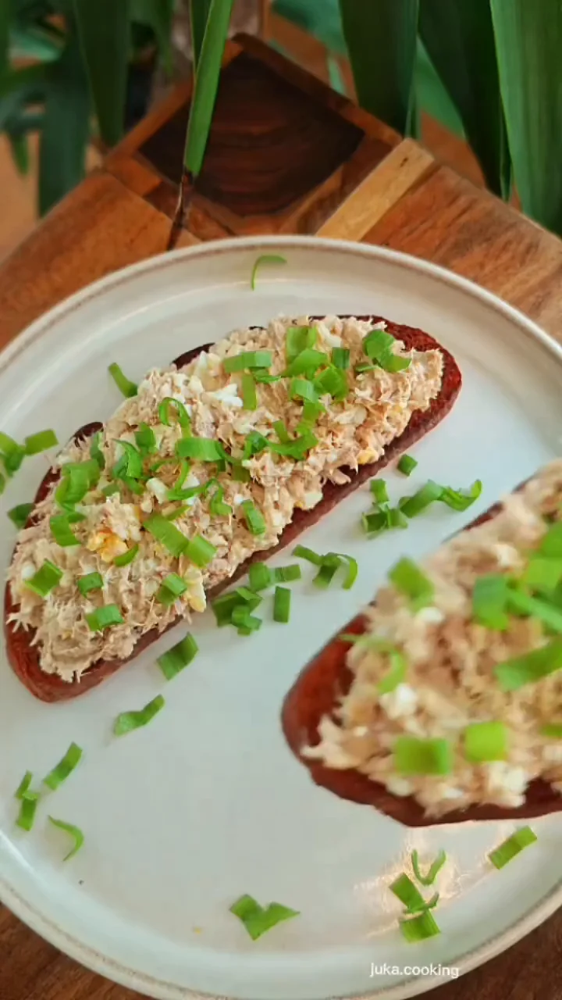

Thunfisch-Ei-Aufstrich mit Butter-Baguette
Knuspriges Butter-Baguette + cremiger Thunfisch-Ei-Aufstrich = pure Geschmacksexplosion! Proteinreich, in nur 10 Minuten fertig und perfekt zum Frühstück, Lunch oder als Snack.
- ca. 10 Min.
- 7 Zutaten
- 5 Schritte
Zur Zubereitung Video ansehen ↗
Zutaten
Zubereitung
- Eier hart kochen, abkühlen lassen und klein schneiden.
- Thunfisch abtropfen lassen.
- Frühlingszwiebeln in feine Ringe schneiden und den Knoblauch fein hacken.
- Alle Zutaten in einer Schüssel vermengen und mit Salz und Pfeffer abschmecken.
- Den Aufstrich auf frisch geröstetes, mit Butter bestrichenes Baguette streichen.